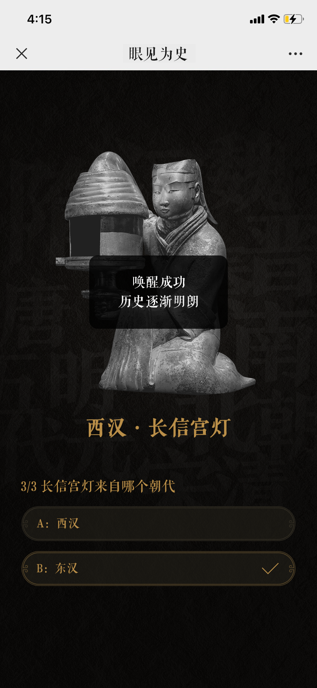

{% extends "./_njk/base.njk" %}
{% block main %}
<section class="wrap">
  <div class="test-wrap">
    <!-- <canvas id="canvasLoading" class="test-canvas"></canvas> -->
    <div class="img-test-box">
      
      
    </div>
    <button class="test-button">点击点亮</button>
  </div>
</section>
{% endblock %}

{% block javascript %}
<script src="./js/zepto.min.js"></script>
<!-- 预加载资源插件 -->
<script type="text/javascript" src="js/preloadjs.min.js"></script>
<!-- 帧动画参数 -->
<script type="text/javascript" src="js/canvasData.js"></script>
<!-- 帧动画模块配置 -->
<script type="text/javascript" src="js/canvasAni.js"></script>
<script src="./js/index.js"></script>
{% endblock %}